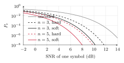
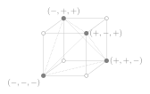

Topic 2. Decoding
In this topic
Topic 1 detected one symbol at a time and showed how errors accumulate along a message. We now study how redundancy improves reliability. The transmitter sends a codeword of n symbols for every k information bits, and the receiver decides on the whole codeword. Sections 2.1 and 2.2 correspond to the first lecture and Sections 2.3 and 2.4 to the second.
We review codes, information bits, coded bits and rate, using repetition on the bit-flipping channel.
We extend MAP and ML detection to codewords. We obtain distance rules for Gaussian and bit-flipping channels, consistency for erasures, and a one-sided rule for exponential noise.
We compare hard and soft decisions for the same code on the Gaussian channel, and identify the information lost by deciding symbolwise.
We compare codes at fixed symbol energy and at fixed energy per information bit. Repetition improves reliability at vanishing rate, motivating the positive-rate question of Topic 3.
2.1 Codes and rate
In Topic 1 the transmitter sent one symbol for every \log_2 M bits, and the receiver decided symbolwise. Exercise 1.6 of Topic 1 showed the weakness of this scheme: the probability that a sequence of n symbols is entirely correct is (1-P_{\rm e})^n, which vanishes as n grows however small P_{\rm e}>0 is. To send long messages reliably, we need something better than sending every bit once. The remedy is redundancy, that is, to use more symbols than strictly necessary, so that the receiver can recover from some of the errors.
Definition 2.1.
An encoder maps every sequence of k information bits (D_1,\ldots,D_k) to a codeword \x=(x_1,\ldots,x_n) of n symbols of the constellation \mathcal X. Different information sequences have different codewords. The set \mathcal C of the 2^k codewords is the code, and its rate, in bits per channel use, is \begin{equation*} R=\frac{k}{n}.\tag{2.1} \end{equation*}
Figure 2.1 shows the position of the encoder and the decoder. The uncoded transmission of Topic 1 is the special case in which every symbol carries \log_2 M bits, with M=|\mathcal X| a power of two, that is, R=\log_2 M. Coding means choosing R smaller than that, and the whole question of this topic and the next is what we obtain in exchange.
Figure 2.1. Coded transmission: k information bits become a codeword \x=(x_1,\ldots,x_n), and the decoder sees \y=(y_1,\ldots,y_n).
The simplest code is the repetition code, which has k=1 and sends the single information bit D a total of n times. With s_0 and s_1 the two points of a binary constellation, the two codewords, indexed by D\in\{0,1\}, are \begin{equation*} \x(D)=(s_D,\ldots,s_D),\tag{2.2} \end{equation*} and the rate is R=1/n. For binary constellations, an encoder first produces n coded bits c_1,\ldots,c_n from the k information bits, and then maps each coded bit to a symbol, x_i=s_{c_i}. For the repetition code, c_1=\cdots=c_n=D. On the bit-flipping and bit-erasing channels the constellation is \{0,1\}. On the Gaussian channel we take s_0=-A and s_1=A, and on the exponential channel s_0=0 and s_1=2A, with A>0. As in Topic 1, Gaussian inputs are amplitudes, whereas exponential-channel inputs are themselves energies.
When the constellation has M>2 points, the encoder produces n_{\rm c} coded bits and maps \log_2 M of them to each symbol. Its binary rate is r=k/n_{\rm c}, and the rate in bits per channel use is R=r\log_2 M. In this topic all the symbols are binary, so n_{\rm c}=n and R=r.
Let us recall how the repetition code behaves on the bit-flipping channel with flip probability p<\tfrac12, which was studied in the information theory course. The natural decoder is majority voting: decide the bit that appears most often among the n received bits, and toss a fair coin in case of a tie. For n=3, Table 2.1 lists the eight possible outputs when D=0 is sent, together with their probabilities and the decision of the majority decoder.
| (y_1,y_2,y_3) | W(\y|000)=\smash{\prod_{i=1}^3} W(y_i|0) | Decision \hat D | Error |
|---|---|---|---|
| 000 | (1-p)^3 | 0 | no |
| 001, 010, 100 | p(1-p)^2 each | 0 | no |
| 011, 101, 110 | p^2(1-p) each | 1 | yes |
| 111 | p^3 | 1 | yes |
Table 2.1. The repetition code with n=3 on the bit-flipping channel, when D=0 is sent.
The table is once more an application of Table 1.1 of Topic 1. Every probability in the second column is a product, because the channel is memoryless, and the conditional error probability is the sum of the rows that lead to an error, \begin{equation*} P_{\rm e}(0)=3p^2(1-p)+p^3=p^2(3-2p).\tag{2.3} \end{equation*} By symmetry P_{\rm e}(1) is the same, so P_{\rm e}=p^2(3-2p) whatever the prior, and this is smaller than p exactly when 0<p<\tfrac12, since p-p^2(3-2p)=p(1-p)(1-2p).
In general, for odd n, the majority decoder fails when at least (n+1)/2 of the n bits are flipped, so \begin{equation*} P_{\rm e}=\sum_{i=(n+1)/2}^{n}\binom{n}{i}\,p^i(1-p)^{n-i}.\tag{2.4} \end{equation*} For n=3 the sum has the two terms of (2.3). The case of even n, with its ties, is Exercise 2.2. For p<\tfrac12 this probability goes to zero as n grows, because the fraction of flipped bits concentrates around p, which is below one half.
Hence, the repetition code makes the error probability as small as we wish. The cost is the rate, since R=1/n goes to zero at the same time. We will come back to this trade-off in Section 2.4.
2.2 Optimal decoding
We now place the decoder in the framework of Topic 1. The transmitter has a message to send, which we may think of as the k bits or, more conveniently, as an index m in a set \mathcal M of 2^k values with prior probabilities \Pr(m). For the repetition code, m is simply the bit D. The message selects the codeword \x(m), the channel produces \y=(y_1,\ldots,y_n), a realization of the random sequence \Y, and a decoder is any function g from the sequences \y to the messages, \hat m=g(\y). Its error probabilities are defined as in Topic 1. The conditional error probability when m is sent is \begin{equation*} P_{\rm e}(m)=\Pr(g(\Y)\neq m\,|\,m \text{ sent}),\tag{2.5} \end{equation*} and the average error probability is \begin{equation*} P_{\rm e}=\sum_{m\in\mathcal M} \Pr(m)\,P_{\rm e}(m).\tag{2.6} \end{equation*}
Theorem 2.2.
No decoder has a smaller average error probability than the MAP decoder, \begin{equation*} g_{\rm MAP}(\y)=\argmax_{m\in\mathcal M} \Pr(m)\,W(\y|\x(m)).\tag{2.7} \end{equation*} With equiprobable messages, the MAP decoder is the ML decoder, \begin{equation*} g_{\rm ML}(\y)=\argmax_{m\in\mathcal M} W(\y|\x(m)).\tag{2.8} \end{equation*}
Nothing in the proof of Theorem 1.4 of Topic 1 used that the observation was a single number. Replace the symbol x by the message m, the output y by the sequence \y, and the channel law W(y|x) by W(\y|\x(m)), and the proof remains valid without changes.
A tie between maximizers may be broken in any way, and we break it with a fair coin. Note that P_{\rm e} is the probability of a wrong message, that is, of a wrong codeword. For the repetition code the message is a single bit, so it is also the bit error probability.
The new element is the channel law of a sequence. As in Topic 1, W denotes a probability for discrete outputs and a density for continuous outputs. All our channels are memoryless, so by the last line of Table 1.1 of Topic 1, \begin{equation*} W(\y|\x)=\prod_{i=1}^n W(y_i|x_i),\tag{2.9} \end{equation*} and the ML decoder maximizes a product of n factors. Since the logarithm is increasing, with the convention \ln 0=-\infty, we may equally maximize the sum of the logarithms, \begin{equation*} g_{\rm ML}(\y)=\argmax_{m\in\mathcal M} \sum_{i=1}^n \ln W\bigl(y_i|x_i(m)\bigr).\tag{2.10} \end{equation*} In words, every channel output y_i gives a score to each candidate codeword, namely the logarithm of how likely y_i is under that codeword, and the decoder adds the scores and picks the codeword with the highest total. This sum is called the log-likelihood of the codeword. Table 2.2 lists the scores on the channels of the course. The terms that do not depend on the codeword have been dropped, since they do not affect the comparison. For the repetition code, for instance, every x_i(m) is the same symbol s_m, so the decoder compares just two numbers, \smash{\sum_{i=1}^n}\ln W(y_i|s_0) and \smash{\sum_{i=1}^n}\ln W(y_i|s_1). For MAP decoding, we add \ln\Pr(m) to the log-likelihood of each codeword. Let us see what the sums of these scores become on the channels of the course.
| Channel | Score of y_i for a codeword with x_i in position i |
|---|---|
| Real Gaussian | -(y_i-x_i)^2/(2\sigma^2) |
| Complex Gaussian | -|y_i-x_i|^2/\sigma^2 |
| Bit-flipping | \ln(1-p) if y_i=x_i, \ln p otherwise |
| Bit-erasing | \ln(1-p) if y_i=x_i, \ln p if y_i=\,?, -\infty if y_i\in\{0,1\} and y_i\neq x_i |
| Exponential noise | -(y_i-x_i)/\mu if y_i\geq x_i, -\infty otherwise |
Table 2.2. The symbolwise scores \ln W(y_i|x_i) of (2.10), up to terms that do not depend on the codeword.
Proposition 2.3.
On the channels of Table 1.2 of Topic 1, the ML decoder takes the following forms.
Real and complex Gaussian: the codeword nearest to \y in Euclidean distance, \begin{equation*} g_{\rm ML}(\y)=\argmin_{m\in\mathcal M}\|\y-\x(m)\|^2,\tag{2.11} \end{equation*} where \|\y-\x\|^2=\smash{\sum_{i=1}^n}|y_i-x_i|^2.
Bit-flipping with p<\tfrac12: the codeword nearest to \y in Hamming distance, \begin{equation*} g_{\rm ML}(\y)=\argmin_{m\in\mathcal M}d_{\rm H}(\y,\x(m)),\tag{2.12} \end{equation*} where d_{\rm H} counts the positions in which two sequences differ.
Bit-erasing: any codeword that agrees with \y in all the positions that were not erased. If there are several, they are equally likely and any of them may be chosen. The MAP decoder breaks the tie with the priors.
Exponential noise: among the codewords with x_i(m)\leq y_i in every position, the one with the largest total energy \smash{\sum_{i=1}^n} x_i(m).
In each case we write the product (2.9) and drop the factors that do not depend on m. Recall that a product of exponentials is the exponential of the sum, which is the reason we took logarithms in (2.10). (a) On the complex channel, the product of the Gaussian densities is (\pi\sigma^2)^{-n}\exp(-\|\y-\x\|^2/\sigma^2), decreasing in the distance. On the real channel the exponent has 2\sigma^2 and the factor in front is (2\pi\sigma^2)^{-n/2}, and the conclusion is the same. (b) If \y and \x differ in d positions, the product is p^d(1-p)^{n-d}=(1-p)^n\bigl(p/(1-p)\bigr)^d, and p/(1-p)<1, so the product decreases with d. (c) If \y has e erasures, the product is p^e(1-p)^{n-e} for every codeword that agrees with the unerased positions, and 0 for the others. (d) The product is \mu^{-n}\exp\bigl(-\smash{\sum_{i=1}^n} (y_i-x_i)/\mu\bigr) if y_i\geq x_i for all i, and 0 otherwise. For fixed \y, it grows with \smash{\sum_{i=1}^n} x_i.
Example 2.4.
For the repetition code, the four rules take a simple form.
Real Gaussian, \mathcal X=\{-A,+A\}: expanding the squares, \|\y-(A,\ldots,A)\|^2<\|\y+(A,\ldots,A)\|^2 is the same as \smash{\sum_{i=1}^n} y_i>0. The ML decoder adds the n observations and looks at the sign of the sum. On the complex channel, it adds the real parts.
Bit-flipping: the Hamming distance to (0,\ldots,0) is the number of ones in \y, and the distance to (1,\ldots,1) the number of zeros. The ML decoder is the majority vote of Section 2.1, which is therefore optimal for equiprobable bits and p<\tfrac12.
Bit-erasing: the two codewords are constant sequences, so a single unerased bit decides. If all n bits are erased, the decoder tosses a coin.
Exponential noise, \mathcal X=\{0,2A\}: the codeword (2A,\ldots,2A) is possible only if every y_i\geq 2A, and then it has the larger energy. Hence, the decoder decides 1 if all the observations are at least 2A, and 0 otherwise.
Problem 2.5.
Compute the error probability of the repetition code with the ML decoder on the real Gaussian channel, as a function of n and of the SNR A^2/\sigma^2 of one symbol.
Show solution
Suppose D=0 is sent, that is, \x=(-A,\ldots,-A). Write Y_i=-A+Z_i, where the Z_i are independent zero-mean Gaussian noise samples of variance \sigma^2. The sum of the observations is \begin{equation*} \sum_{i=1}^n Y_i=-nA+\sum_{i=1}^n Z_i,\tag{2.13} \end{equation*} and the decoder errs when this sum is positive, that is, when \smash{\sum_{i=1}^n} Z_i>nA. The sum of n independent Gaussian variables of variance \sigma^2 is Gaussian with variance n\sigma^2. The variances add because the variables are independent, and the sum of independent Gaussians is again Gaussian, as seen in the probability course. Hence, by equation (1.23) of Topic 1 with threshold nA and variance n\sigma^2, \begin{equation*} P_{\rm e}(0)=\Pr\Bigl(\sum_{i=1}^n Z_i>nA\Bigr)=\tfrac12\erfc\biggl(\frac{nA}{\sqrt{2n}\,\sigma}\biggr)=\tfrac12\erfc\Bigl(\sqrt{n\,\snr/2}\Bigr).\tag{2.14} \end{equation*} By symmetry P_{\rm e}(1) is the same, so for any prior \begin{equation*} P_{\rm e}=\tfrac12\erfc\Bigl(\sqrt{n\,\snr/2}\Bigr).\tag{2.15} \end{equation*} The function \erfc decreases with its argument, so collecting more observations reduces the error probability. Compared with the uncoded 2-PAM of equation (1.22) of Topic 1, the SNR is multiplied by n, because the decoder collects the energy of the n copies. For n=2 this is the same as doubling the energy of a single symbol, a gain of 3 dB.
Problem 2.6.
Compute the error probability of the repetition code with equiprobable bits and the ML decoder on the bit-erasing and exponential noise channels.
Show solution
On the bit-erasing channel, the decoder of Example 2.4(c) errs only if all n bits are erased, which happens with probability p^n by the product rule, and the fair coin then gives the wrong bit, with probability \tfrac12. Hence, P_{\rm e}=\tfrac12 p^n. Note the two different quantities: p^n is the probability that everything is erased, and \tfrac12p^n is the probability of an error. With unequal priors, the MAP decoder guesses the more probable bit at a total erasure and errs with probability p^n\min(\Pr(0),\Pr(1)), as in Exercise 1.1 of Topic 1.
On the exponential channel, when D=1 is sent every y_i is at least 2A and the decision is always right, P_{\rm e}(1)=0. When D=0 is sent, an error requires every noise sample to reach 2A. The samples are independent, so by the product rule and Example 1.14 of Topic 1, \begin{equation*} P_{\rm e}(0)=\prod_{i=1}^n\Pr(Z_i\geq 2A)=e^{-2nA/\mu},\tag{2.16} \end{equation*} and with equiprobable bits P_{\rm e}=\tfrac12 e^{-2nA/\mu}. Since the bits are equiprobable, \Es=A. In terms of the SNR \Es/\mu=A/\mu of one symbol, P_{\rm e}=\tfrac12 e^{-2n\,\snr}. Once more, n repetitions are worth n times the SNR.
Problem 2.7.
The repetition code with n=3 is used on the bit-flipping channel with p=\tfrac1{10}, and the bit to be sent is 1 with probability \tfrac{19}{20}. What does the MAP decoder decide for each received sequence, and what is its error probability?
Show solution
Let d be the number of ones in \y. By (2.9), W(\y|000)=p^d(1-p)^{3-d} and W(\y|111)=p^{3-d}(1-p)^d, so the two joint probabilities that the MAP decoder compares depend on \y only through d. Table 2.3 lists them.
| d | 20000\Pr(0)W(\y|000) | 20000\Pr(1)W(\y|111) | Decision \hat D |
|---|---|---|---|
| 0 | 729 | 19 | 0 |
| 1 | 81 | 171 | 1 |
| 2 | 9 | 1539 | 1 |
| 3 | 1 | 13851 | 1 |
Table 2.3. The two joint probabilities compared by the MAP decoder of Problem 2.7, multiplied by the common denominator 20000, for a sequence with d ones.
The decoder decides 1 as soon as a single 1 is received, against the majority. In general, the MAP decoder decides 1 when 19p^{3-d}(1-p)^d>p^d(1-p)^{3-d}. Collecting the powers of 1-p on the left and those of p on the right, this is 19\,(1-p)^{2d-3}>p^{2d-3}, that is, \begin{equation*} 19>\Bigl(\frac{1-p}{p}\Bigr)^{3-2d}=9^{\,3-2d}.\tag{2.17} \end{equation*} For d=0 the right-hand side is 729 and the decoder decides 0. For d=1 it is 9, smaller than 19, and the decoder decides 1. For d=2 and d=3 it is smaller still, in agreement with the table. With such a prior, a single 1 among three bits is more likely a correct bit from a transmitted 1 than a flipped bit from a transmitted 0.
The decoder errs when 0 is sent and some bit is flipped, or when 1 is sent and all three are, so \begin{equation*} P_{\rm e}=\frac1{20}\biggl(1-\Bigl(\frac9{10}\Bigr)^3\biggr)+\frac{19}{20}\Bigl(\frac1{10}\Bigr)^3=\frac{29}{2000},\tag{2.18} \end{equation*} against p^2(3-2p)=\tfrac7{250}=\tfrac{56}{2000} for majority voting, whose error probability does not depend on the prior. As in Problems 1.7 and 1.9 of Topic 1, the prior can change the decision and reduce the average error probability.
2.3 Hard and soft decisions
We now compare two receivers for the same repetition code on the real Gaussian channel, with equiprobable bits and \snr=A^2/\sigma^2. The ML decoder of Example 2.4(a) works with the observations y_i themselves. A different receiver, natural after Topic 1, first detects every symbol with the symbolwise detector of Topic 1, obtaining a bit \hat c_i per symbol, and then decodes from the n detected bits. Figure 2.2 shows the two receivers. The upper one is said to take hard decisions, since every observation is reduced to a bit before decoding. The lower one takes soft decisions, because the decoder sees the observations in full.
Figure 2.2. Two receivers for the repetition code on the Gaussian channel.
The hard receiver is easy to analyze with the tools we have. Each detected bit \hat c_i is wrong with the probability (1.22) of Topic 1, which we call p here, \begin{equation*} p=\tfrac12\erfc\Bigl(\sqrt{\snr/2}\Bigr),\tag{2.19} \end{equation*} and the errors in different positions are independent, since the noise samples are. In other words, seen from the coded bits to the detected bits, the Gaussian channel followed by the detector is a bit-flipping channel with flip probability p. On that channel, majority voting is the ML decoder, and for odd n its error probability is (2.4) with the value (2.19) of p. Even lengths include the tie term of Exercise 2.2. The soft receiver has the error probability (2.15).
Example 2.8.
Take n=2. The hard receiver sees two detected bits. If they agree, it follows them, and if they disagree, it tosses a coin. An error occurs when both bits are wrong, with probability p^2, or when they disagree and the coin is wrong, with probability 2p(1-p)\cdot\tfrac12. The total is p^2+p(1-p)=p, so the hard receiver with n=2 is exactly as good as sending the bit once. The soft receiver, on the other hand, has P_{\rm e}=\tfrac12\erfc(\sqrt{\snr}), the 3 dB gain of Problem 2.5. The second copy of the bit is not wasted, but only if the receiver looks at the two observations together.
Table 2.4 gives the error probability of both receivers for n up to 5, and Figure 2.3 plots it. The soft receiver is better at every SNR, and the difference grows with n. For n=3, for instance, the hard receiver takes the uncoded p down to p^2(3-2p), whereas the soft receiver multiplies the argument of \erfc by \sqrt3. At high SNR the loss of the hard receiver tends to 10\log_{10}\bigl(2n/(n+1)\bigr), from 1.8 dB for n=3 to 3 dB for large n, as Exercise 2.8 shows. Note that the SNR in the table and the figure is that of one symbol. Section 2.4 shows what the comparison looks like at equal energy per bit.
| n | Hard decisions | Soft decisions |
|---|---|---|
| 1 | p | \tfrac12\erfc(\sqrt{\snr/2}) |
| 2 | p | \tfrac12\erfc(\sqrt{\snr}) |
| 3 | 3p^2(1-p)+p^3 | \tfrac12\erfc(\sqrt{3\snr/2}) |
| 5 | 10p^3(1-p)^2+5p^4(1-p)+p^5 | \tfrac12\erfc(\sqrt{5\snr/2}) |
Table 2.4. Error probability of the repetition code on the real Gaussian channel with hard and soft decisions, where p=\tfrac12\erfc(\sqrt{\snr/2}) is the error probability of one detected bit. The SNR is that of one symbol.

Figure 2.3. The curves of Table 2.4. Dashed lines are hard decisions, solid lines soft decisions.
The loss has a simple origin. The symbolwise detector keeps only the sign of each y_i and discards its magnitude. An observation close to the threshold is nearly useless, and one far from it is nearly certain, but after the detector both count as one vote. The soft decoder adds the observations, so a large y_i can outweigh two small ones of the opposite sign. For instance, with \y=(2,\,-\tfrac12,\,-\tfrac12)A the hard receiver sees (+,-,-) and decides 0, while the soft receiver computes \smash{\sum_{i=1}^3} y_i=A>0 and decides 1.
This is the general lesson of the section. The part of the receiver that processes the channel output should not take decisions. It should pass the observations, or the scores of (2.10), to the decoder. Modern receivers do exactly this, and the scores are then called soft information.
2.4 Rate and reliability
Repetition drives the error probability to zero as n grows: on the bit-flipping channel with fixed p<\tfrac12, by (2.4), on the erasure channel with fixed p<1 and on the Gaussian and exponential channels with fixed symbol energy and noise level, by Problem 2.6 and (2.15). The only exceptions are the useless channels, the BSC with p=\tfrac12 and the BEC with p=1, where P_{\rm e}=\tfrac12 for every n. The price is the rate, since R=1/n vanishes too, and on the Gaussian and exponential channels each information bit costs the energy of n symbols. Table 2.5 shows the price on the bit-flipping channel with p=\tfrac1{10}. To send k bits reliably we need nk channel uses, and n has to grow without bound. The table gives the error probability of each repeated bit, and the errors of the k bits accumulate along the message as in Section 1.6 of Topic 1.
| n | R | P_{\rm e} | Value |
|---|---|---|---|
| 1 | 1 | \tfrac1{10} | |
| 3 | \tfrac13 | \tfrac7{250} | |
| 5 | \tfrac15 | \tfrac{107}{12500} | |
| 11 | \tfrac1{11} | \tfrac1{10^{11}}\sum_{i=6}^{11}\binom{11}{i}9^{11-i} | 3.0\cdot10^{-4} |
| 21 | \tfrac1{21} | \tfrac1{10^{21}}\sum_{i=11}^{21}\binom{21}{i}9^{21-i} | 1.4\cdot10^{-6} |
| 23 | \tfrac1{23} | \tfrac1{10^{23}}\sum_{i=12}^{23}\binom{23}{i}9^{23-i} | 4.7\cdot10^{-7} |
Table 2.5. Rate and error probability of the repetition code on the bit-flipping channel with p=\tfrac1{10}. The last column gives the size of the long sums.
The capacity of this channel, from the information theory course, is \begin{equation*} C=1-h_2\Bigl(\frac1{10}\Bigr)\approx0.53\quad\text{bits per channel use},\tag{2.20} \end{equation*} where h_2 is the binary entropy function. Repetition needs n=23 to reach P_{\rm e}<10^{-6}, at rate R=\tfrac1{23}, more than ten times smaller than the capacity. Topic 3 says what that number promises.
On the Gaussian channel there is a second way of looking at the price, in terms of energy. With \Es the mean energy per channel use, a code of rate R=k/n spends on each information bit \begin{equation*} \Eb=\frac{n\Es}{k}=\frac{\Es}{R}.\tag{2.21} \end{equation*} For the repetition code with 2-PAM symbols, \Eb=nA^2. Writing (2.15) in terms of \Eb, \begin{equation*} P_{\rm e}=\tfrac12\erfc\biggl(\sqrt{\frac{nA^2}{2\sigma^2}}\biggr)=\tfrac12\erfc\biggl(\sqrt{\frac{\Eb}{2\sigma^2}}\biggr),\tag{2.22} \end{equation*} which is exactly the error probability of uncoded 2-PAM with the same energy per bit, given by equation (1.22) of Topic 1. In other words, at equal energy per bit, the repetition code with soft decisions gains nothing at all. It is equivalent to sending each bit once with n times the energy, and the hard receiver is worse than that. The reduction in error probability is paid entirely with energy and rate.
Not every code is so limited. The minimum distance of a code is the smallest Euclidean distance between two of its codewords, and the following problem shows the simplest code whose minimum distance, at equal energy per bit, is larger than that of repetition.
Problem 2.9.
Two bits (D_1,D_2) are encoded into three 2-PAM symbols. The encoder sends D_1, D_2 and their sum modulo 2, with 0\mapsto -A and 1\mapsto +A. The four messages are equiprobable. Find the rate and the codewords, decode \y=(1,\,-\tfrac12,\,-1)A with the ML decoder on the real Gaussian channel, and compare the minimum distance between codewords with that of uncoded 2-PAM and of the repetition code with n=3, at the same energy per bit.
Show solution
The rate is R=2/3. The third bit is 0 when D_1=D_2 and 1 otherwise. Table 2.6 lists the four codewords, in units of A, and any two of them differ in exactly two positions. By Proposition 2.3(a), we compute the squared distances from \y to the four codewords, which are in the last column of the table. For the first codeword, for instance, the squared distance is (2^2+(\tfrac12)^2+0^2)A^2=\tfrac{17}{4}A^2.
| (D_1,D_2) | Codeword | \|\y-\x\|^2 |
|---|---|---|
| (0,0) | (-,-,-) | \tfrac{17}{4}A^2 |
| (0,1) | (-,+,+) | \tfrac{41}{4}A^2 |
| (1,0) | (+,-,+) | \tfrac{17}{4}A^2 |
| (1,1) | (+,+,-) | \tfrac94A^2 |
Table 2.6. The four codewords of the parity code and their squared distances to \y=(1,-\tfrac12,-1)A.
The decoder decides (+,+,-), that is, (D_1,D_2)=(1,1). Note that the symbolwise detector would have produced (+,-,-), which is not a codeword. The weak second observation is outvoted by the other two through the parity symbol.
Two codewords that differ in two positions are at squared distance 2\cdot(2A)^2=8A^2, and this is the squared minimum distance of the code. Figure 2.4 shows the geometry. The energy per bit is \Eb=3A^2/2, since three symbols carry two bits. To compare with the other schemes at equal energy per bit, note that scaling every symbol by a factor \alpha multiplies \Eb and every squared distance by \alpha^2, so the ratio d_{\min}^2/\Eb does not change and can be computed for each scheme as it stands. Table 2.7 does so.
| Scheme | R | \Eb | d_{\min}^2 | d_{\min}^2/\Eb |
|---|---|---|---|---|
| Uncoded 2-PAM | 1 | A^2 | 4A^2 | 4 |
| Repetition, n=3 | 1/3 | 3A^2 | 12A^2 | 4 |
| Parity code | 2/3 | 3A^2/2 | 8A^2 | 16/3 |
Table 2.7. Rate, energy per bit and squared minimum distance of three schemes with 2-PAM symbols of amplitude A.
At equal energy per information bit, the parity code has d_{\min}^2=\tfrac{16}{3}\Eb, compared with 4\Eb for the other two schemes. Its squared minimum distance is larger by a factor \tfrac43, that is, an asymptotic gain of up to 1.25 dB. At high SNR the error probability is governed by the closest pairs of codewords, as it was governed in Topic 1 by the neighboring points of 4-PAM at distance 2a. Two codewords at distance d are confused with probability \tfrac12\erfc\bigl(d/(2\sqrt2\,\sigma)\bigr), as Exercise 2.7 shows, and Exercise 2.6 turns this into a bound for the parity code. Better codes make the gain larger, at the price of longer codewords and more work at the decoder.

Figure 2.4. The eight sequences of three 2-PAM symbols are the vertices of a cube of side 2A. The four codewords of the parity code (filled) are pairwise at distance 2\sqrt2\,A, the diagonal of a face. The empty vertices are the sequences of odd parity.
This leads to the question that Topic 3 answers, namely whether there is a code whose rate stays above a fixed positive value while the error probability goes to zero, and which does better than repetition at equal energy per bit.
Shannon’s answer is yes to both. Every channel has a capacity C, and for every rate below C there are codes whose error probability is as small as we wish. The capacity is strictly positive for every channel of Table 1.2 of Topic 1, except in useless cases such as the bit-flipping channel with p=\tfrac12 or the erasure channel with p=1. Such codes are not repetition codes. Their codewords are spread out in a way that the decoder can exploit, as the parity code of Problem 2.9 begins to show.
What to remember
A code sends n symbols for every k bits, and its rate is R=k/n. The repetition code has k=1 and R=1/n.
The MAP decoder \argmax_{m\in\mathcal M} \Pr(m)\,W(\y|\x(m)) is optimal, by the proof of Topic 1, and with equiprobable messages it is the ML decoder. On a memoryless channel, the ML decoder maximizes the sum of the scores \ln W(y_i|x_i), and the MAP decoder adds \ln \Pr(m) to that sum.
ML uses Euclidean distance for Gaussian noise, Hamming distance for bit flips with p<\tfrac12, and consistency with unerased bits for erasures. For repetition, these rules become the sign of the sum on the real Gaussian channel, majority voting, and the first unerased bit. With exponential noise, ML selects the feasible codeword with the largest total input energy.
With the ML decoder, the repetition code has P_{\rm e}=\tfrac12\erfc(\sqrt{n\,\snr/2}) on the real Gaussian channel, so n repetitions are worth n times the SNR.
On the Gaussian channel, hard decisions discard the magnitudes of the observations and lose with respect to soft decisions, up to 3 dB for long repetition codes. On the exponential channel they lose nothing.
On every channel that carries information, repetition at fixed symbol energy drives P_{\rm e} to zero, but its rate vanishes too. At equal energy per bit, Gaussian repetition with soft decoding gains nothing over uncoded transmission. Topic 3 shows that better codes exist.